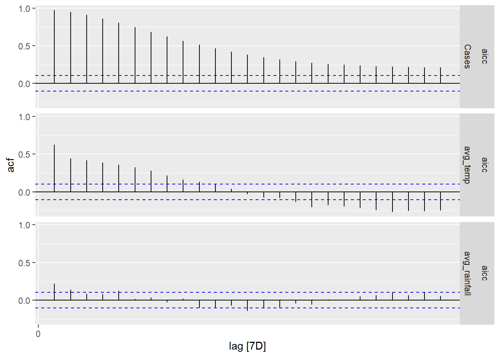

pacman::p_load(
shiny,
tidyverse,
fable,
tsibble,
feasts,
patchwork,
ggstatsplot,
MLmetrics,
performance,
caret,
qqplotr,
lubridate,
ggthemes,
sf,
terra,
gstat,
automap,
tmap,
viridis,
zoo,
rstantools,
urca
)Time Series Forecasting
Forecasting Dengue Cases using various models
Data Import
df <- read_csv("data/dengue_climate_joined_by_week_transformed_diff.csv")ARIMA
Data Preparation
arima_ts <- df %>% dplyr::select(Date, Cases)
arima_tbl <- arima_ts %>% as_tsibble(index = Date) %>% fill_gaps(.full = TRUE) %>% fill(Cases)Model
arima_mdl <- arima_tbl %>%
model('arima' = ARIMA(Cases))Residual
arima_mdl %>% gg_tsresiduals()Extracting params
a <- capture.output(report(arima_mdl))
c <- ""
for (b in a) {
c <- paste0(c,b,"\n")
}
params <- gsub("[\\(\\)]", "", regmatches(c, gregexpr("\\(.*?\\)", c))[[1]])
params <- as.list(strsplit(params, ',')[[1]])
params[[2]][1] "1"Autocorrelation
arima_tbl %>% gg_tsdisplay(difference(Cases,1), plot_type = 'partial')Actual vs Predicted
arima_fitted <- fitted(arima_mdl)[,2:3] %>%
as_tibble() %>%
rename(Cases=.fitted)
arima_fitted$Type <- "Fit"
arima_tbl$Type <- "Observed"
arima_avp <- dplyr::bind_rows(arima_fitted, arima_tbl)
ggplot(data = arima_avp) +
geom_line(aes(x = Date, y = Cases, colour = Type)) +
ggtitle("Observed vs Fitted")Model Metrics
arima_cv <- arima_tbl %>%
stretch_tsibble(.init = 200, .step = 10)
arima_cv_metrics <- arima_cv %>%
model(ARIMA(Cases)) %>%
forecast(h = 1) %>%
accuracy(arima_tbl)
arima_train_metrics <- arima_mdl %>%
accuracy()arima_cv_metrics[c("RMSE","MAE","MAPE")]# A tibble: 1 × 3
RMSE MAE MAPE
<dbl> <dbl> <dbl>
1 51.3 30.5 17.0Forecast
arima_mdl %>%
forecast(h = 26) %>%
autoplot(arima_tbl)results <- arima_mdl %>%
forecast(h = 26)
results <- results[-c(1,3)]
colnames(results) <- c("Date", "Forecast")
results# A tsibble: 26 x 2 [7D]
Date Forecast
<date> <dbl>
1 2020-11-30 225.
2 2020-12-07 168.
3 2020-12-14 120.
4 2020-12-21 79.8
5 2020-12-28 52.5
6 2021-01-04 38.3
7 2021-01-11 35.9
8 2021-01-18 42.8
9 2021-01-25 55.8
10 2021-02-01 71.6
# ℹ 16 more rowsExponential Smoothing
Data Preparation
ets_ts <- df %>% dplyr::select(Date, Cases)
ets_tbl <- ets_ts %>% as_tsibble(index = Date) %>% fill_gaps(.full = TRUE) %>% fill(Cases)Model
ets_mdl <- ets_tbl %>%
model(ETS(Cases))
report(ets_mdl)Series: Cases
Model: ETS(M,A,N)
Smoothing parameters:
alpha = 0.8319707
beta = 0.0001000477
Initial states:
l[0] b[0]
482.8724 2.7354
sigma^2: 0.0369
AIC AICc BIC
4694.026 4694.195 4713.456 Extracting Params
a <- capture.output(report(ets_mdl))
para1 <- ""
para2 <- ""
para3 <- ""
c <- ""
for (b in a) {
if (grepl("alpha", b)) {
para1 <- as.list(strsplit(b, ' = ')[[1]])
para1 <- trimws(para1[[2]])
}
if (grepl("beta", b)) {
para2 <- as.list(strsplit(b, ' = ')[[1]])
para2 <- trimws(para2[[2]])
}
if (grepl("gamma", b)) {
para3 <- as.list(strsplit(b, ' = ')[[1]])
para3 <- trimws(para3[[2]])
}
c <- paste0(c,b,"\n")
}
params <- gsub("[\\(\\)]", "", regmatches(c, gregexpr("\\(.*?\\)", c))[[1]])
params <- as.list(strsplit(params, ',')[[1]])
para4 <- params[[1]]
para5 <- params[[2]]
para6 <- params[[3]]Decomposition
components(ets_mdl) %>%
autoplot() +
labs(title = "Exponential Smoothing Components")Actual vs Predicted
ets_fitted <- fitted(ets_mdl)[,2:3] %>%
as_tibble() %>%
rename(Cases=.fitted)
ets_fitted$Type <- "Fit"
ets_tbl$Type <- "Observed"
ets_avp <- dplyr::bind_rows(ets_fitted, ets_tbl)
ggplot(data = ets_avp) +
geom_line(aes(x = Date, y = Cases, colour = Type)) +
ggtitle("Observed vs Fitted")Model Metrics
ets_cv <- ets_tbl %>%
stretch_tsibble(.init = 200, .step = 10)
ets_cv_metrics <- ets_cv %>%
model(ARIMA(Cases)) %>%
forecast(h = 1) %>%
accuracy(ets_tbl)
ets_train_metrics <- ets_mdl %>%
accuracy()ets_cv_metrics$MAPE[1] 16.97937Forecast
ets_mdl %>%
forecast(h = 26) %>%
autoplot(ets_tbl)VAR
Data Preparation
var_ts <- df %>% dplyr::select(-c("Year", "WkNo"))
var_tbl <- var_ts %>% as_tsibble(index = Date) %>% fill_gaps(.full = TRUE) %>% fill(colnames(var_ts))Model Construct
i <- c("avg_temp, avg_rainfall")
v <- "Cases"
mode <- '"aicc"'
for (s in i) {
v <- paste0(v,",",s)
}
strr <- paste0('var_tbl %>% model(',mode,' = VAR(vars(',v,'), ic=',mode,'))')
var_mdl <- eval(parse(text = strr))Autocorrelation
var_mdl |>
augment() |>
ACF() |>
autoplot()
Actual vs Predicted
var_fitted <- fitted(var_mdl)[,2:3] %>%
as_tibble() #%>%
#rename(Cases=.fitted)
var_fitted$Type <- "Fit"
var_tbl$Type <- "Observed"
var_avp <- dplyr::bind_rows(var_fitted, var_tbl)
ggplot(data = var_avp) +
geom_line(aes(x = Date, y = Cases, colour = Type)) +
ggtitle("Observed vs Fitted")Model Metrics
var_cv <- var_tbl %>%
stretch_tsibble(.init = 200, .step = 10)
var_cv_metrics <- var_cv %>%
model(
aicc = VAR(vars(Cases))
) %>%
forecast(h = 1) %>%
accuracy(var_tbl)var_cv_metrics# A tibble: 1 × 10
.model .type ME RMSE MAE MPE MAPE MASE RMSSE ACF1
<chr> <chr> <dbl> <dbl> <dbl> <dbl> <dbl> <dbl> <dbl> <dbl>
1 aicc Test 6.02 51.3 30.7 -13.1 21.0 0.808 0.824 0.207Forecast
fc <- var_mdl %>%
forecast(h = 26)
fc %>% autoplot(var_tbl)ci <- hilo(fc)v <- "avg_rainfall"
var_fc <- data.frame(Date=fc$Date,
temp=fc$.mean[,v],
lwr80=ci$`80%`[[v]]$lower,
upr80=ci$`80%`[[v]]$upper,
lwr95=ci$`95%`[[v]]$lower,
upr95=ci$`95%`[[v]]$upper,
Type="Forecast")
colnames(var_fc)[2] <- v
var_obs <- data.frame(Date=var_tbl$Date,
temp=var_tbl[v],
lwr80=NA,
upr80=NA,
lwr95=NA,
upr95=NA,
Type="Observed")
var_plot <- dplyr::bind_rows(var_obs, var_fc)ggplot(data = var_plot, aes(x=Date, y=.data[[v]] ,colour=Type)) +
geom_line() +
geom_ribbon(aes(ymin=lwr80, ymax=upr80), alpha=0.2, linetype=0, fill="blue") +
geom_ribbon(aes(ymin=lwr95, ymax=upr95), alpha=0.1, linetype=0, fill="blue") +
scale_colour_manual(values = c("Observed"="black", "Forecast"="blue")) +
ggtitle(paste0("Forecast ",v," for next n periods"))Coeffs
ggcoefstats(var_mdl %>% broom::tidy())